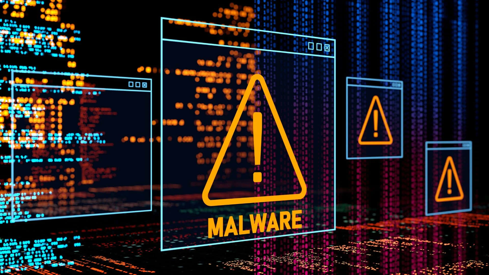

1. Malware-ul este un termen generic pentru orice software rău intenționat, inclusiv viermi, ransomware, spyware și viruși. Este proiectat să dăuneze computerelor sau rețelelor prin modificarea sau ștergerea fișierelor, extragerea datelor confidențiale, cum ar fi parolele și numerele de cont, sau trimiterea de e-mailuri sau trafic rău intenționat. Malware-ul poate fi instalat de un atacator care obține acces la rețea, dar, de multe ori, utilizatorii implementează involuntar malware pe dispozitive sau în rețeaua firmei după ce fac clic pe un link greșit sau descarcă o atașare infectată.
2. Phishingul este un tip de inginerie socială care utilizează e-mailuri, mesaje text sau mesaje de poștă vocală care par să provină de la o sursă de încredere, pentru a convinge alte persoane să divulge informații confidențiale sau să facă clic pe un link necunoscut. Unele campanii de phishing sunt trimise unui număr foarte mare de persoane, în speranța că măcar o singură persoană va face clic. Alte campanii, numite phishing țintit, sunt mai direcționate și se concentrează pe o singură persoană. De exemplu, un adversar poate pretinde că este un căutător de locuri de muncă pentru a păcăli un recrutor să descarce un CV infectat.
3. Ransomware-u este o formă de malware care criptează sau blochează accesul la datele de pe un sistem sau dispozitiv și apoi solicită o plată (răscumpărare) pentru a furniza cheia de decriptare sau pentru a debloca accesul. Un utilizator sau o organizație devine victimă atunci când un atacator reușește să infecteze sistemul cu ransomware. Acest lucru poate fi realizat printr-un e-mail phishing, prin descărcarea unui fișier infectat sau prin exploatarea unei vulnerabilități în software. După ce ransomware-ul a infectat sistemul, începe procesul de criptare a datelor. Aceasta înseamnă că fișierele de pe sistemul infectat sunt transformate într-un format ilegibil, iar utilizatorul sau organizația nu mai poate accesa acele date.
4. SQL Injection este o formă de atac cibernetic în care un atacator introduce sau "injectează" comenzi SQL malițioase în câmpurile de intrare ale unei aplicații web, cu scopul de a compromite și a manipula baza de date a aplicației. Aplicațiile web comunică cu bazele de date pentru a prelua, actualiza sau șterge informații. Atacatorul exploatează această comunicare prin inserarea de comenzi SQL în formularele sau URL-urile aplicației. Atacatorul caută vulnerabilități în aplicația web care permit inserarea de instrucțiuni SQL. Aceste vulnerabilități pot apărea atunci când datele introduse de utilizatori nu sunt validate sau scăpate corespunzător în cadrul interogărilor SQL.
5. Atacul de tip Zero-Day se referă la exploatarea unei vulnerabilități de securitate într-un software sau sistem informatic înainte ca dezvoltatorul să lanseze o soluție de remediere (patch) sau să fie conștient de acea vulnerabilitate. Termenul "Zero-Day" vine de la faptul că dezvoltatorii software nu au avut nicio zi (zero zile) pentru a dezvolta și a distribui un patch pentru a corecta vulnerabilitatea înainte ca aceasta să fie exploatată. Atacul are loc înainte ca vendorul de software să știe de existența vulnerabilității, ceea ce oferă foarte puțin timp pentru ca utilizatorii să se protejeze.